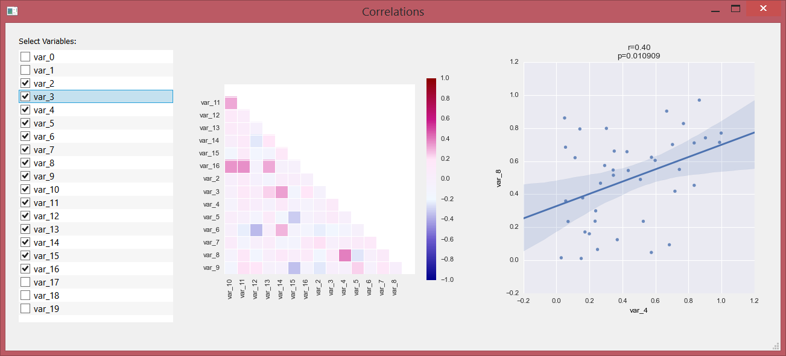

correlation_viewer
A simple application for interactively exploring correlations in a data set. It is built using PyQt4, Matplotlib and Seaborns. It illustrates how this libraries can be used for interactively exploring data.
Usage
Just run the view_correlations.py script. The main screen should look like this

Use the left-most panel to select variables, the middle panel will show a correlation matrix with this variables. You may hover over the squares to get some additional information. If you click on one of the squares, an scatter plot will appear in the right panel.
Input file format
This is just a prototype, and therefore there are a lot of expectations about the input file. It should be a .csv file with "," as separator. The first column will be used as index for the rows.
Prerequisites
- Numpy
- SciPy
- Pandas
- Matplotlib
- Seaborn
- PyQt4
Warning
The P values reported are not corrected by any means. There is a big chance of finding false positives. Also remember correlation doesn't imply causality.
Some interesting links about this: